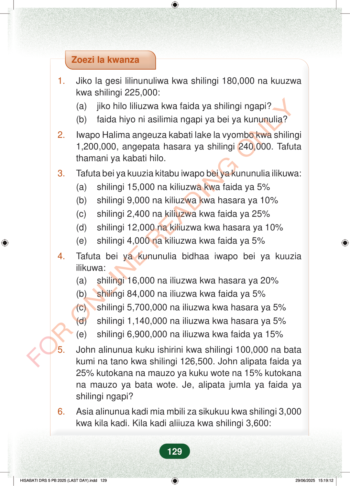

Zoezi la kwanza1.Jiko la gesi lilinunuliwa kwa shilingi 180,000 na kuuzwakwa shilingi 225,000:(a)jiko hilo liliuzwa kwa faida ya shilingi ngapi?(b)faida hiyo ni asilimia ngapi ya bei ya kununulia?2.Iwapo Halima angeuza kabati lake la vyombo kwa shilingi1,200,000, angepata hasara ya shilingi 240,000. Tafutathamani ya kabati hilo.3.Tafuta bei ya kuuzia kitabu iwapo bei ya kununulia ilikuwa:(a)shilingi 15,000 na kiliuzwa kwa faida ya 5%(b)shilingi 9,000 na kiliuzwa kwa hasara ya 10%(c)shilingi 2,400 na kiliuzwa kwa faida ya 25%(d)shilingi 12,000 na kiliuzwa kwa hasara ya 10%(e)shilingi 4,000 na kiliuzwa kwa faida ya 5%4.Tafuta bei ya kununulia bidhaa iwapo bei ya kuuziailikuwa:(a)shilingi 16,000 na iliuzwa kwa hasara ya 20%(b)shilingi 84,000 na iliuzwa kwa faida ya 5%(c)shilingi 5,700,000 na iliuzwa kwa hasara ya 5%(d)shilingi 1,140,000 na iliuzwa kwa hasara ya 5%(e)shilingi 6,900,000 na iliuzwa kwa faida ya 15%5.John alinunua kuku ishirini kwa shilingi 100,000 na batakumi na tano kwa shilingi 126,500. John alipata faida ya25% kutokana na mauzo ya kuku wote na 15% kutokanana mauzo ya bata wote. Je, alipata jumla ya faida yashilingi ngapi?6.Asia alinunua kadi mia mbili za sikukuu kwa shilingi 3,000kwa kila kadi. Kila kadi aliiuza kwa shilingi 3,600:129
Zoezi la kwanza
1. Jiko la gesi lilinunuliwa kwa shilingi 180,000 na kuuzwa kwa shilingi 225,000: (a) jiko hilo liliuzwa kwa faida ya shilingi ngapi? (b) faida hiyo ni asilimia ngapi ya bei ya kununulia?
2. Iwapo Halima angeuza kabati lake la vyombo kwa shilingi 1,200,000, angepata hasara ya shilingi 240,000. Tafuta thamani ya kabati hilo.
3. Tafuta bei ya kuuzia kitabu iwapo bei ya kununulia ilikuwa: (a) shilingi 15,000 na kiliuzwa kwa faida ya 5% (b) shilingi 9,000 na kiliuzwa kwa hasara ya 10% (c) shilingi 2,400 na kiliuzwa kwa faida ya 25% (d) shilingi 12,000 na kiliuzwa kwa hasara ya 10% (e) shilingi 4,000 na kiliuzwa kwa faida ya 5%
4. Tafuta bei ya kununulia bidhaa iwapo bei ya kuuzia ilikuwa: (a) shilingi 16,000 na iliuzwa kwa hasara ya 20% (b) shilingi 84,000 na iliuzwa kwa faida ya 5% (c) shilingi 5,700,000 na iliuzwa kwa hasara ya 5% (d) shilingi 1,140,000 na iliuzwa kwa hasara ya 5% (e) shilingi 6,900,000 na iliuzwa kwa faida ya 15%
5. John alinunua kuku ishirini kwa shilingi 100,000 na bata kumi na tano kwa shilingi 126,500. John alipata faida ya 25% kutokana na mauzo ya kuku wote na 15% kutokana na mauzo ya bata wote. Je, alipata jumla ya faida ya shilingi ngapi?
6. Asia alinunua kadi mia mbili za sikukuu kwa shilingi 3,000 kwa kila kadi. Kila kadi aliiuza kwa shilingi 3,600:
129
Zoezi la kwanza1.Jiko la gesi lilinunuliwa kwa shilingi 180,000 na kuuzwa kwa shilingi 225,000:(a)jiko hilo liliuzwa kwa faida ya shilingi ngapi?(b)faida hiyo ni asilimia ngapi ya bei ya kununulia?2.Iwapo Halima angeuza kabati lake la vyombo kwa shilingi 1,200,000, angepata hasara ya shilingi 240,000.Tafuta thamani ya kabati hilo.3.Tafuta bei ya kuuzia kitabu iwapo bei ya kununulia ilikuwa:(a)shilingi 15,000 na kiliuzwa kwa faida ya 5%(b)shilingi 9,000 na kiliuzwa kwa hasara ya 10%(c)shilingi 2,400 na kiliuzwa kwa faida ya 25%(d)shilingi 12,000 na kiliuzwa kwa hasara ya 10%(e)shilingi 4,000 na kiliuzwa kwa faida ya 5%4.Tafuta bei ya kununulia bidhaa iwapo bei ya kuuzia ilikuwa:(a)shilingi 16,000 na iliuzwa kwa hasara ya 20%(b)shilingi 84,000 na iliuzwa kwa faida ya 5%(c)shilingi 5,700,000 na iliuzwa kwa hasara ya 5%(d)shilingi 1,140,000 na iliuzwa kwa hasara ya 5%(e)shilingi 6,900,000 na iliuzwa kwa faida ya 15%5.John alinunua kuku ishirini kwa shilingi 100,000 na bata kumi na tano kwa shilingi 126,500.John alipata faida ya 25% kutokana na mauzo ya kuku wote na 15% kutokana na mauzo ya bata wote.Je, alipata jumla ya faida ya shilingi ngapi?6.Asia alinunua kadi mia mbili za sikukuu kwa shilingi 3,000 kwa kila kadi.Kila kadi aliiuza kwa shilingi 3,600: